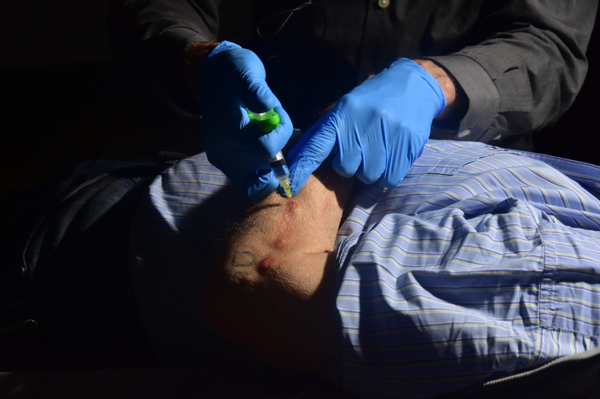
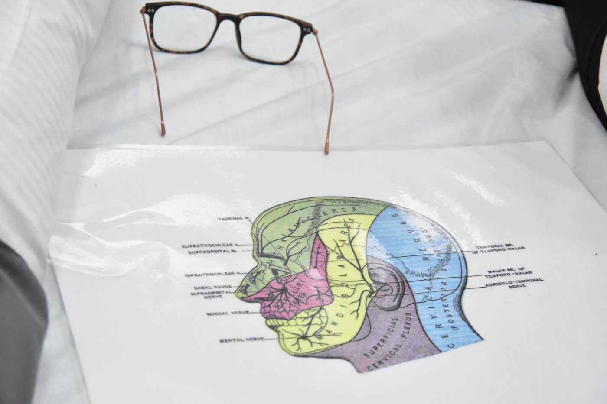
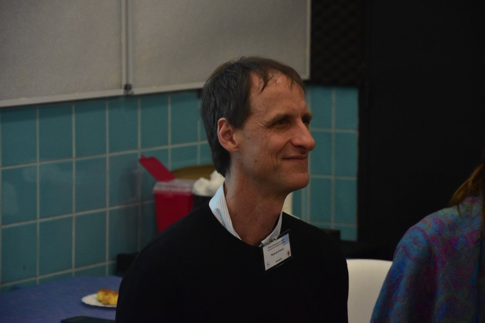
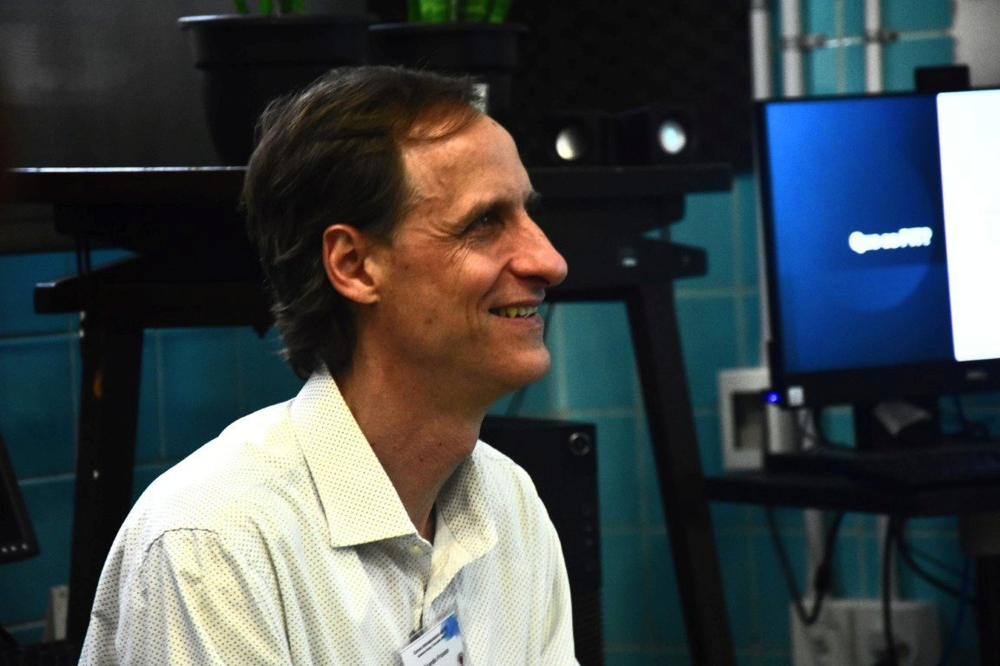

Curso Introductorio · Online · Abierto a todos
Tratá el dolor desde su origen.
Curso introductorio online con uno de los instructores
autorizados de PIT en América Latina.
Lumbalgia · Rodilla · Acceso permanente.
Acceso permanente · USD 97.99
Perineural Injection Treatment
Una técnica que actúa donde nace el dolor.
El PIT — Perineural Injection Treatment — es una técnica mínimamente invasiva que busca despolarizar los nervios subcutáneos sensibilizados mediante inyecciones de solución de glucosa al 5%.
Cuando un nervio periférico se inflama de forma crónica, pierde su capacidad de regulación. El PIT restaura esa función, reduciendo el dolor desde su origen neurológico.
Mecanismo de Acción
Técnica aplicada en paciente

Punto de inyección cervical

Mapa anatómico de referencia
Audiencia del Curso
Para profesionales y pacientes.
El Dr. Frusso habla tanto al que quiere aprender a aplicar la técnica, como al que quiere entender su dolor.
Profesionales de la Salud
Médicos, kinesiólogos y fisioterapeutas que tratan dolor musculoesquelético y quieren:
- Incorporar una técnica segura y efectiva a su práctica
- Diferenciarse en el manejo del dolor crónico
- Aprender de la mano del referente latinoamericano en PIT
Pacientes con Dolor Crónico
Personas que padecen lumbalgia, dolor de rodilla u otras condiciones musculoesqueléticas crónicas que quieren:
- Entender qué les pasa y por qué persiste el dolor
- Conocer opciones de tratamiento menos invasivas
- Tomar decisiones informadas sobre su salud
Módulo I · Ya Disponible
Dos patologías. Casos clínicos reales.
El Dr. Frusso aplica el PIT en pacientes reales, en cámara, sin cortes. Ves exactamente lo que pasa en el consultorio: la técnica, la conversación y el seguimiento.
Cap. 01 · Disponible
Lumbalgia crónica.
- Anatomía del nervio y fisiopatología del dolor lumbar
- Identificación de los puntos de inyección
- Técnica PIT aplicada en paciente real — sin cortes
- Criterios de selección y seguimiento
Cap. 02 · Disponible
Dolor de rodilla.
- Anatomía periarticular y nervios de la rodilla
- Zonas de inyección: safeno, ramos infrapatelares
- Técnica PIT en rodilla — paciente real, sin cortes
- Manejo del paciente con osteoartritis


Docente · Referente Latinoamericano
30+ años acompañando el dolor crónico.
Médico de Familia egresado de la UBA en 1992. Más de tres décadas de práctica clínica en el Hospital Italiano de Buenos Aires, donde fundó el Área de Medicina Músculo-esquelética dentro del Servicio de Medicina Familiar.
Pionero en Argentina en la aplicación de Neuroproloterapia y PIT, formado directamente por el Dr. John Lyftogt — creador del método — desde 2012, y único instructor autorizado para la enseñanza de la técnica en América Latina desde 2015.
Testimonios
Lo que dicen quienes ya lo hicieron.
[TESTIMONIO DE PROFESIONAL — completar con texto real del Dr. Frusso]
[TESTIMONIO DE PROFESIONAL — completar con texto real del Dr. Frusso]
[TESTIMONIO DE PACIENTE — completar con texto real del Dr. Frusso]
Evolución Clínica · Caso de referencia
Del dolor crónico a la vida cotidiana.
El Dr. Frusso incorporará un caso clínico real con autorización del paciente. El esquema a continuación muestra el tipo de evolución que se documenta en el curso.
Perfil · [Nombre], [edad] años · [Ciudad]
- Lumbalgia crónica de [X] años de evolución
- Dolor irradiado a miembro inferior derecho
- Sin respuesta a AINE ni fisioterapia convencional
- Escala EVA: 8/10 en reposo
- Imposibilidad de trabajar con normalidad
[COMPLETAR con caso real del Dr. Frusso — con autorización del paciente]
Seguimiento · [X] semanas · [X] sesiones
- Reducción del dolor: EVA 8 → 2
- Retorno a actividad laboral plena
- Desaparición del componente irradiado
- Sin necesidad de medicación
- Mantenimiento a los [X] meses de seguimiento
[COMPLETAR con caso real del Dr. Frusso — con autorización del paciente]
"[TESTIMONIO DEL PACIENTE sobre su experiencia con el tratamiento — completar con texto real autorizado por el Dr. Frusso]"
Acceso Permanente · Pago Único
Empezá cuando quieras.
USD 97.99
pago único, acceso permanente
Mercado Pago · Tarjeta de crédito/débito · Transferencia · PayPal
Incluye certificado de aprobación · Emitido por el Dr. Frusso como instructor autorizado por el Dr. John Lyftogt.
Pago seguro
Procesado por Hotmart con encriptación SSL
Acceso inmediato
Empezás a ver el contenido en minutos
Acceso permanente
Sin fecha de vencimiento · Avanzás a tu ritmo
Certificado de aprobación
Emitido por el Dr. Frusso al completar el módulo
Preguntas Frecuentes